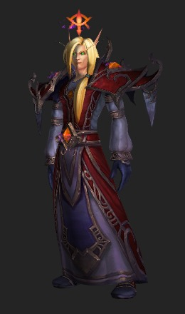
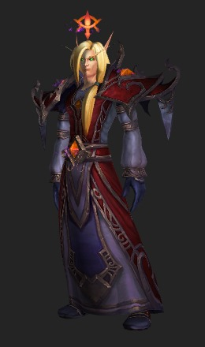

du Mage
Dans World of Warcraft, les armures de combats entre joueurs sont actuellement réparties en plus de 26 saisons ! Chacune durant à peu près 4 mois.
Pour cette raison, nous avons selectionné pour vous les 4 saisons qui ont apporté les plus beaux sets d'armures obtenable dans les modes JcJ !
La majorité des sets d'armures possèdent un colori qui dépend de votre faction
Vous trouverez à gauche les déclinaisons de l'Alliance et à droite celles de la Horde !
Saison 14
Voir la version "Elite"
Pour la Horde : Rendez-vous à Ogrimmar au près du Garde de Sang Zar'shi qui vous vendra ce set d'armure pour 12 Médailles d'honneur
Pour l'Alliance : Rendez-vous à Hurlevent au près du Chevalier-lieutenant T’Maire Sydes qui vous vendra ce set d'armure pour 12 Médailles d'honneur
Saison 17
 

Voir la version "Elite"
Pour la Horde : Rendez-vous sur la muraille de Pandarie au près du pandaren Doris Chiltonius qui vous vendra ce set d'armure pour 12 Médailles d'honneur
Pour l'Alliance : Rendez-vous sur la muraille de Pandarie au près de la pandarène Lucan Malory qui vous vendra ce set d'armure
Saison 21


Voir la version "Elite"
Pour la Horde : Rendez-vous à ville flotante de Dalaran au près de l'Apothicaire Lee qui vous vendra ce set d'armure pour 12 Médailles d'honneur
Pour l'Alliance : Rendez-vous à la ville flotante de Dalaran au près du Lieutenant Surtièse qui vous vendra ce set d'armure pour 12 Médailles d'honneur
Saison 23
Voir la version "Elite"
Que vous fassiez parti de la Horde ou de l'Alliance, ce set est malheureusement non obtenable pour le moment...
Pour vous le procurer, il vous faudra attendre la prochaine saison JcJ. Un fois celle-ci démarrée, les développeurs mettront en vente ces armures chez de nouveaux vendeurs: elles couteront alors le prix habituel de 12 Médailles de l'honneur.